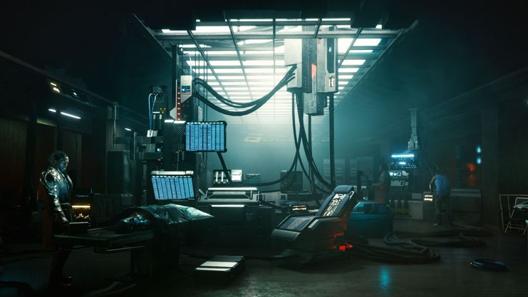

Ray Tracing Overview
What is Ray Tracing?
Ray tracing is an advanced rendering technique that traces the path of light and how it interacts with different virtual objects and surfaces that allows for more dramatic and/or realistic lighting and shadows. It works by sending out a ray from the screen or camera that bounces off these surfaces until they hit a light source or are told to stop. For example, if a ray bounces straight towards a light source and hits something in the way, that area would be in the shade. If the ray hits a light source, then that area is illuminated by that light source.
There are some challenges that come with ray tracing. At best, one ray will give one pixel of information to the screen as there is the possibility of a ray bouncing off to a non-visible area. Additionally, rays sent out will often split into other rays when they hit surfaces that aren’t completely reflective. Because of this, it takes a lot of horsepower to render an image using ray tracing. Film and animation studios can afford the render power and time for these images because they have the resources and don’t need to render in real time. However, in the gaming world, this means that maintaining a playable and enjoyable frame rate with full ray tracing is practically impossible. So what does it mean when a game is “ray-traced”?
Common Misconceptions
Games that utilize ray-tracing are not fully ray traced. To do so would take an insane amount of processing power and time, so no matter how optimized a computer is, running a game with full ray tracing is not possible with today’s technology. As a result, ray tracing is often used for a specific function, such as for reflections, certain lighting, and traveling through translucent objects. The other objects that need to be rendered use rasterization (see History), a rendering technique that had been used in 3D computer games for almost the entirety of their existence. Rasterization is used for depth, angles, and the relationship to the player, while ray tracing handles lighting and reflections.